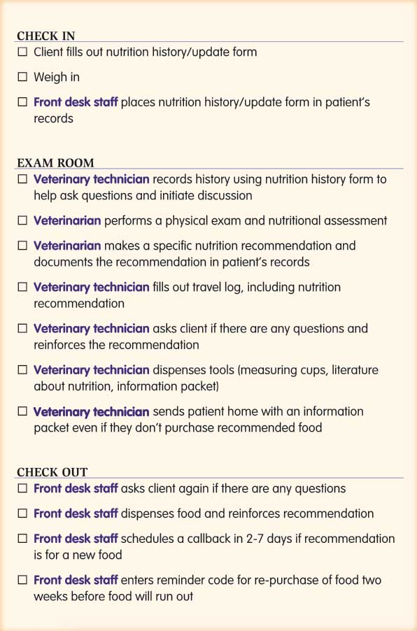

If your vet has recommended a specialist veterinary or prescription diet for your pet, you are not alone. Pet food has become an important source of revenue for almost all veterinary practices over the years and veterinary foods - that is foods that are only available through veterinary practices, are the products of choice for countless vets across the country and the world.
But with so many food options and feeding philosophies out there, why are these narrow ranges from just a handful of companies so popular amongst vets? In this article we'll be looking at what veterinary foods are, who makes them and the extraordinary lengths these companies have gone to to ensure that their foods are the only ones on your vet's mind.
The Big Three
As we examined in our previous article, three giant multinational companies, Mars, Nestle and Colgate Palmolive, absolutely dominate the pet food industry, together accounting for almost 90% of global sales. These companies also produce the world's three most successful veterinary pet food ranges - Royal Canin Veterinary Diets, Purina Veterinary Diets and Hill's Prescription Diets, each of which is advocated by an army of vets worldwide.
Veterinary diets
With their clinical, medicine-like white packaging, veterinary diets are generally pretty easy to spot. Their similarity with medicines is no mistake. The manufacturers are very keen for you and your vet to think of these foods as specialist and medicinal - that these remarkable foods will cure your pet of whatever ailment he or she is facing. In truth though, many health problems that veterinary diets are recommended for including most teeth, joint, skin, weight and digestive disorders as well as a number of more serious conditions can often be managed just as effectively or even better on many high quality 'regular' dog foods. We covered the subject in some depth in our Prescription Pet Foods article so no need to repeat ourselves too much here.
So if veterinary diets are just one of many ways to effectively feed ill pets (and arguably not the best one for most) why on earth do so many vets recommend them so passionately?
Sponsored vet schools
In the UK there are seven universities offering degrees in veterinary science. Many, including myself, would argue that nutrition is not given nearly enough attention on these courses, often only coming up as a side topic two or three times over the five years of study. Nevertheless, it is this small amount of nutritional study that will provide the foundation for a vet's future food recommendations and The Big Three have not been slow in realising its importance.
Due to chronic underfunding (or in some cases just greed), many universities are very open to external sources of revenue and are happy to accept 'sponsorship' from companies despite glaring conflicts of interest. Over decades, The Big Three have exploited this situation to develop ever closer ties with vet schools around the world, providing funding and support in return for a few concessions.
The smoking gun
Thanks to a series of freedom of information requests made by UKRMB (UK Raw Meaty Bones), a number of documents have been disclosed that demonstrate the true nature of the cooperation between vet schools and The Big Three pet food companies and the far-reaching effects they are likely to have had on the nutritional understanding of our vets.
You can take a look at the documents yourself, and I urge that you do if you have the time as they are enormously enlightening. The most revealing are a string of letters between Edinburgh University and Pedigree (aka Mars Corp/Royal Canin) in the 1990's. I've summarised the agreement below:
Edinburgh University & Pedigree [1]
From 1992 until at least 2003 Pedigree paid Edinburgh University £20k+ per year and in return...
The University created the fulltime position of 'Resident in Clinical Nutrition' to be filled and paid by Pedigree.
The Resident was responsible for:
Teaching vet students, veterinary nurse students and practicing vets in animal nutrition.
Providing nutritional advice to the public via the University's Small Animal Clinic.
Implementing joint reseach projects between the university and Waltham (Pedigree's research arm). The agreement stipulated that this research would only be published following 'review by Waltham'.
The University agreed that "Pedigree Petfoods' products will be used exclusively in the Faculty of Veterinary Medicine, including the Referral and 'First Opinion' Clinics".
Pedigree provided university staff with "comprehensive" training in "cash generating schemes" including merchandising, retailing skills and pet health counselling.
Edinburgh agreed to "commit staff to the principles of retailing".
"The content of the Undergraduate Small Animal Teaching Curriculem will be assessed, in conjunction with Pedigree Petfoods & Waltham with a view to integrating the most up-to-date nutritional information available... into the course".
Speakers, written material and promotional visits from other pet food manufacturers were banned.
In a further agreement with Royal Canin (aka Pedigree) [2], Edinburgh University agrees to complete confidentiality on it's dealings with the company, including witholding the information from the University's own staff.
Even after reading through the agreement for the dozenth time, I still can't quite believe its audacity. What it essentially boils down to is a well respected University accepting cash in return for allowing a Pedigree employee to pose as a faculty member in order to 'educate' current and future vets in nutrition and carry out nutritional research on behalf of the University. Just pause and think about that.
And as if that wasn't enough, the University then committed its staff to being trained as Pedigree salespeople.
And then they commit to allowing Pedigree to moderate their curriculum?!
As unbelievable as this deal seems, it really did happen for at least 11 years (and could very well still be going on today) and it would have undoubtably left its mark on the thousands of vet students that passed through Edinburgh University during those years.
Sadly, Edinburgh is far from alone. After another Freedom of Information request by UKRMB, the University of Liverpool admitted to having a full time lecturer and a veterinary nurse on the Royal Canin payroll as well as numerous lectures being 'sponsored' by pet food companies [3]. And judging by the numerous similar revelations that have come to light concerning other vet schools both here and abroad, it seems that few if any will be totally free from the influence of The Big Three [4][5][6][7][8].
Amazingly, though, none of this seems to break any laws. According to the RCVS (Royal College of Veterinary Surgeons), "while a course in veterinary medicine must meet day one competencies, how that knowledge is delivered remains the responsibility of the university".
Nutrition textbooks
But it doesn't stop there. All students need textbooks and for small animal nutrition, there are only a handful to choose from. But guess what, they are also made by the Big Three!
The most popular text on the subject, entitled "Small Animal Clinical Nutrition" is made by Hill's. They also make the accompanying "Quick Consult" guide and the "Key to Clinical Nutrition". Royal Canin's best known texts are the Encyclopedia of Canine Clinical Nutrition and the Encyclopedia of Feline Clinical Nutrition.
It probably won't surprise you to hear that these texts are not what most people would call 'impartial' on the subject of pet food. The two Royal Canin Encyclopedias of Clinical Nutrition (you can see an online version of the canine edition here) are particularly brazen. As an example, the Canine Encyclopaedia dedicates more space to promoting Soy Protein Isolate Hydrolysate (a common Royal Canin ingredient) than it does to exploring the entire subject of home-preparing pet food.
But what's possibly even more worrying is the way these books seamlessly merge nutritional science with the science of making money. The entire last chapter, entitled 'Integration of Nutrition into Clinical Practice' is essentially one long set of instructions on how to sell as much Royal Canin as possible. It includes info on how to best position the foods to boost sales and even includes the below diagram illustrating the optimal shelving arrangment.
The very last sentence in the entire textbook perfectly summarises how Royal Canin consider your sick pets: "Ideally, the space should be organized in such a way that owners are led to buy a new supply of food for their dog, and even to buy new products for the dog that they have not seen before (e.g., chewing bars for dental hygiene)".
Remember that this book is one of the primary sources of information on pet nutrition for budding vets.
Ongoing 'education'
Throughout their career, most vets will continue to expand their knowledge through attending lectures, seminars and conferences and by following veterinary papers and journals. The trouble is, the Big Three have these well and truly covered too.
It is the same universities and their Big Three staff members that are giving the lectures and acting as speakers at seminars and conferences. They also account for the majority of scholarly articles on pet nutrition and are the ones carrying out the all-important peer review. And if you take a look at the sponsor list for any of the big veterinary associations and events around the world, you will soon notice that the same three company names coming up again and again.
Sponsors list from an AVA (Australian Veterinary Association) flyer
And if you had any doubts whether corporate sponsorship might influence an organisation's perspective, take a look at this checklist that WSAVA (the World Small Animal Veterinary Association) recently sent out to its 200,000 vet members.

What it boils down to is a huge, supposedly impartial veterinary association instructing it's members to persistently nudge each and every client towards changing their pet's food no matter what the status of the pet, even if it is perfectly healthy. It doesn't take Colombo to see that something doesn't add up here.
Brainwashed?
While brainwashing is a strong word, it's hard to find a term that fits better. Starting at vet school and continuing throughout their careers, vets are continually and relentlessly bombarded with a single message: that veterinary diets from the Big Three are the best and safest options for all pets. It's therefore not at all surprising that so many believe it so vehemently.
So next time your vet recommends some overpriced shiny white bag of cereals and additives, don't get mad at them, for they know not what they do.
You can't even get too angry at the Big Three. Don't get me wrong, they are responsible for great wrongdoing and the world would almost certainly be better off without them but blaming giant multinational corporations for exploiting a situation to make more money is like blaming bears for pooping in the woods. It's what they do.
No, the true villains here are the veterinary bodies and particularly the Universities that so readily sell out their students, their staff and the entire veterinary profession for a quick buck. Thanks to their shady dealings over the last few decades, the Big Three have become so entwined with the veterinary industry that it's now impossible to know where one ends and the other begins.
References
A huge thanks to the good folks at UKRMB for all of their work in unearthing these documents.
Correspondence between The Royal Dick School of Veterinary Studies and Pedigree Master Foods. 1993-2003. Disclosed to UKRMB as result of FOI request. Link
Correspondence and contract between The Royal Dick School of Veterinary Studies and Royal Canin. 2006. Disclosed to UKRMB as result of FOI request. Link
FOI request disclosure from Liverpool University. 2006. Disclosed to UKRMB. Link
FOI request disclosure from Bristol University. 2005. Disclosed to UKRMB. Link
FOI request disclosure from Bristol University. 2007. Disclosed to UKRMB. Link
Memorandum of Understanding and invoices between Hill's Pet Nutrition and University of Sydney. 2013. Disclosed to Raw Meaty Bones. Link
Agreement between Hill's Pet Nutrition and University of Melbourne. 2017-19. Disclosed to Raw Meaty Bones. Link
The Royal Veterinary College's refusal to provide any information on their ties with pet food manufacturers. 2005. Correspondence with UKRMB. Link